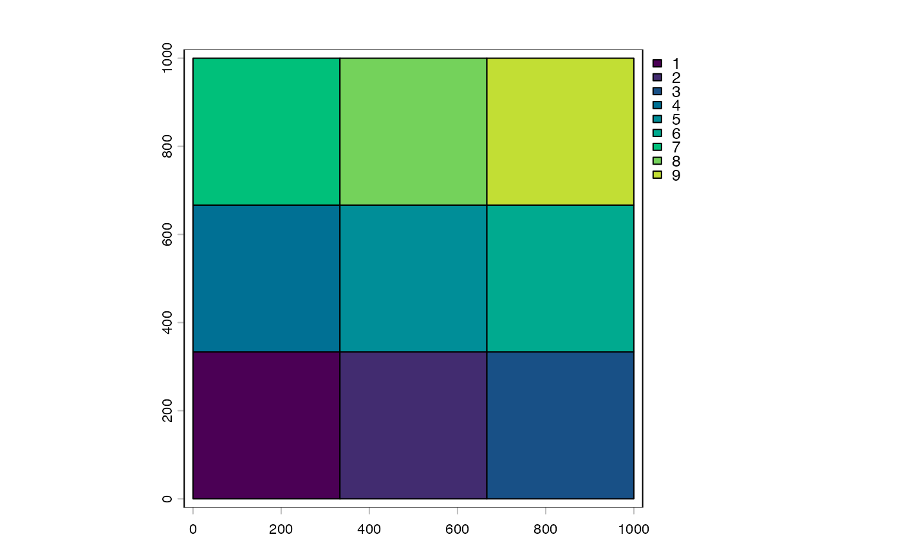
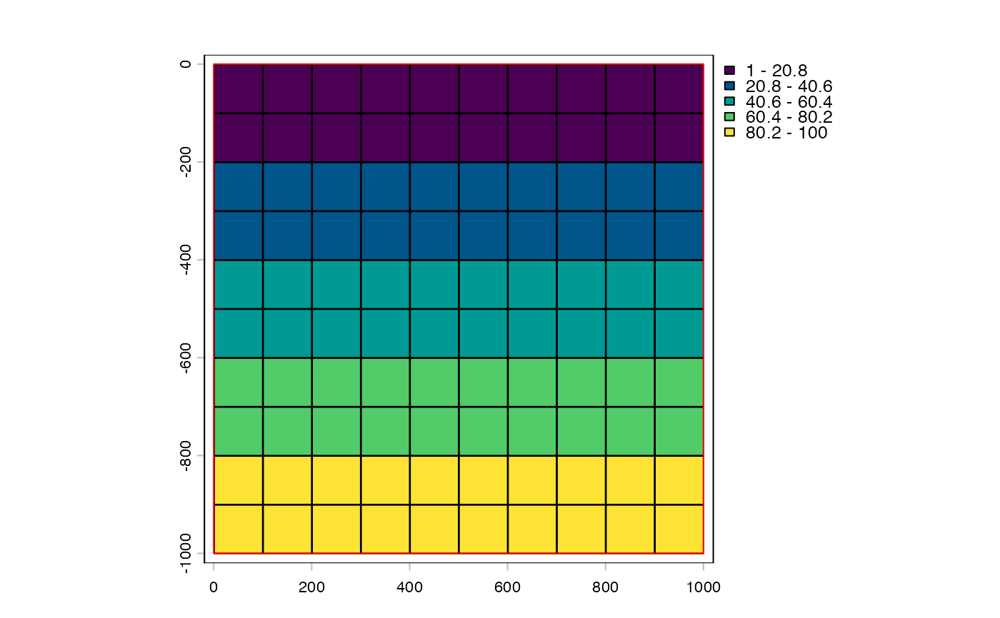
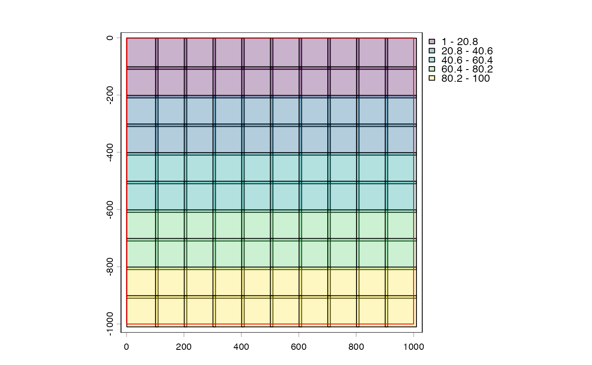

Tile padding extends the bounds of the tile beyond the region that they are initially planned for by an equal amount on all 4 sides. This can help with things like spatial contiguity, so that artificial borders are less obvious.
Padding can be added either via $pad or + and - operators.
The + and - operators specifically modify the padding value based on the
arithmetic ops. This is similar to their usage in terra::Arith-methods
$stride<- is an alternative way to set padding via the stride between
tile starts: pad = (tile_dim - stride) / 2. Requires tile_dims to be
set (i.e. not freeTilePlan). $stride returns the effective stride given
the current pad.
# S4 method for class 'tilePlan,numeric'
e1 + e2
# S4 method for class 'tilePlan,numeric'
e1 - e2
# S4 method for class 'pointTilePlan,numeric'
e1 + e2
# S4 method for class 'pixelTilePlan,numeric'
e1 + e2
# S4 method for class 'tileGroup,numeric'
e1 + e2
# S4 method for class 'tileGroup,numeric'
e1 - e2
# S4 method for class 'tileSelection,numeric'
e1 + e2
# S4 method for class 'tileSelection,numeric'
e1 - e2tilePlan
Padding for spatial tile plans is added without any further changes.
Padding for pixel tile plans are automatically zeroed out against the top left
Other tile* methods:
bracket,
centroids(),
dim(),
dollar,
double_bracket,
ext(),
plot()
spat <- tilePlan("spatial")
ext(spat) <- c(0, 1000, 0, 1000)
length(spat) <- 9
plot(spat)

spat[1:3]
#> [[1]]
#> SpatExtent : 0, 333.333333333333, 0, 333.333333333333 (xmin, xmax, ymin, ymax)
#>
#> [[2]]
#> SpatExtent : 333.333333333333, 666.666666666667, 0, 333.333333333333 (xmin, xmax, ymin, ymax)
#>
#> [[3]]
#> SpatExtent : 666.666666666667, 1000, 0, 333.333333333333 (xmin, xmax, ymin, ymax)
#>
spat <- spat + 10
plot(spat)
spat[1:3]
#> [[1]]
#> SpatExtent : -10, 343.333333333333, -10, 343.333333333333 (xmin, xmax, ymin, ymax)
#>
#> [[2]]
#> SpatExtent : 323.333333333333, 676.666666666667, -10, 343.333333333333 (xmin, xmax, ymin, ymax)
#>
#> [[3]]
#> SpatExtent : 656.666666666667, 1010, -10, 343.333333333333 (xmin, xmax, ymin, ymax)
#>
px <- tilePlan("pixel")
px$pxdims <- c(1000, 1000)
px$ncols <- 100
px$nrows <- 100
plot(px)

px[1:3]
#> [[1]]
#> [1] 1 100 1 100
#> attr(,"tile")
#> [1] 1
#>
#> [[2]]
#> [1] 101 200 1 100
#> attr(,"tile")
#> [1] 2
#>
#> [[3]]
#> [1] 201 300 1 100
#> attr(,"tile")
#> [1] 3
#>
px <- px + 5
plot(px)

px[1:3]
#> [[1]]
#> [1] 1 110 1 110
#> attr(,"tile")
#> [1] 1
#>
#> [[2]]
#> [1] 101 210 1 110
#> attr(,"tile")
#> [1] 2
#>
#> [[3]]
#> [1] 201 310 1 110
#> attr(,"tile")
#> [1] 3
#>